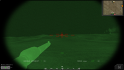
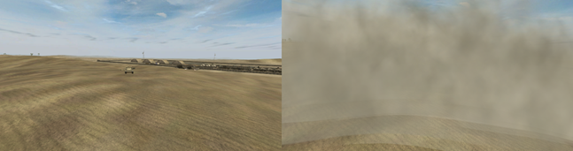
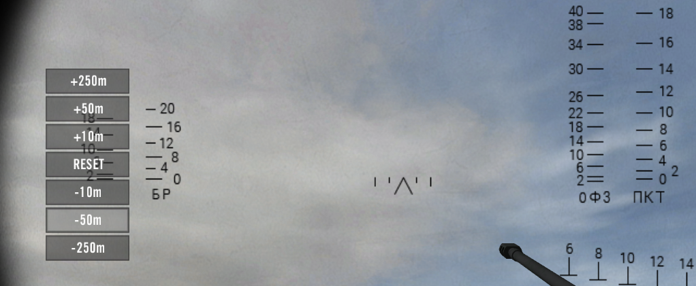
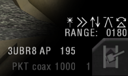

Operando Veículos
Informações Gerais Sobre Veículos
- Veículos leves, caminhões e barcos e a maioria dos jipes (exceto blindados leves) podem ser operados por qualquer soldado. Veículos blindados, helicópteros e aeronaves precisam de kits específicos de veículos para operar. Os jogadores que não estiverem usando o kit correto não poderão dirigir o veículo ou usar as suas armas. Você não pode entrar ou usar veículos inimigos. Para veículos terrestres, você precisa de um kit Crewman. Para aeronaves e helicópteros, é o kit Pilot. Estes são solicitados pelo veículo ou por uma caixa de suprimentos.
- Visualizações externas (câmera em terceira pessoa) para veículos foram removidas. Mas, para certos veículos, há câmeras personalizadas, como os caminhões, que podem olhar para trás (C ).
- Você pode mirar nas MGs estáticos e montados no veículo pressionando a tecla de mudança de câmera \ (C ).
- As armas automáticas montadas no veículo geralmente têm superaquecimento. Observe o elemento HUD de calor no canto inferior direito.

- Os MGs montados no veículo usam cintos de munição. Eles são recarregados automaticamente, mas são limitados em número.
- Os veículos podem ser reabastecidos e reparados no depósito de suprimentos(reparo da base principal). Ou use o reparo móvel que qualquer caminhão de logística pode dropar. Aeronaves e helicópteros são automaticamente consertados e rearmados em seu local de spawn.
- Os insurgentes têm veículos suicidas como um caminhão de lixo laranja ou pequenos carros civis cheios de C4. Você pode detoná-los com o botão direito do mouse.
- Ao sair de um veículo em movimento, você sofrerá danos dependendo da sua velocidade. Você será gravemente ferido se sair de um veículo em chamas.
- Quando os veículos sofrerem muito dano, eles podem se tornar incapazes de se mover ou utilizar sua torre até que sejam totalmente consertados.
- Os veículos que disparam mísseis guiados precisam estar parados por cerca de 7 segundos antes de poderem disparar sua arma.
- Trocar armas de veículos (tipo de munição) normalmente causará um atraso antes que você possa disparar.
- Você pode usar CTRL esquerdo + movimentar o mouse para olhar livremente ao operar a maioria dos veículos, como helicópteros, jatos, jipes, barcos e caminhões. APCs e IFVs não possuem esse recurso, pois usam câmeras dedicadas.
Veículos Blindados
- Tanques e IFVs têm assentos separados para Piloto e artilheiro. Para usar a posição do artilheiro, um piloto ou artilheiro da cúpula deve estar presente. Depois de mudar para o assento do artilheiro, você deve esperar 30 segundos antes de poder mirar o canhão.
- O Piloto e artilheiro em um veículo deve estar no mesmo esquadrão.
- Motoristas de tanques e certos APC / IFVs possuem um modo de visualização de comandante que fornece uma visão de 360 ° ao redor da torre. Isso pode ser acessado pressionando 2.
- Pilotos e artilheiros podem dar zoom na sua visão pressionando a tecla de fumaça padrão (X ). Alguns Pilotos de tanque devem primeiro mudar para a visão do comandante.
- A maioria dos tanques e IFVs pode usar uma visão térmica além de suas visualizações (câmeras) normais. Você pode alternar para o modo térmico usando o menu de rádio secundário (T ) e selecionando “Dia / Termal”. Alguns também permitem alternar entre variações térmicas como WHOT / BHOT.

Visão Termal
- Veículos blindados não emitem nenhum som de alerta quando são alvos de lançadores de foguetes ou quando mísseis são disparados contra eles.
- Veículos blindados possuem materiais realistas. Isso significa que a blindagem frontal e da torre é mais forte que a traseira e superior do veículo. Lados de veículos e as trilhas geralmente têm o meio termo quando se trata de força de armadura.
- Tanques e IFVs geralmente têm até 4 tipos de munição:
- Armor-piercing (AP): Para atacar veículos blindados inimigos.
- High Explosive (HE) (carregado pressionando 2 ): Efetivo contra alvos fáceis (jipes, casas, helicópteros, infantaria coberta, etc. )
- Anti-tank missiles (carregado pressionando 2 ): Usados contra blindagem pesada.
- Co-axial MG (carregado pressionando 3 ): Usada contra infantaria.
- Pilotos de tanque ou artilheiros (dependendo do veículo ) e certos outros veículos podem Lançar Fumaça pressionando o botão direito do mouse.
Os artilheiros de Tanques e IFVs usam o slot de arma (geralmente 3 ) e apertam o botão esquerdo do mouse para lançar uma salva de granadas de fumaça. Cada um deles pode disparar 2 salvas \ (o artilheiro tem que esperar 60s entre elas ).
- Para determinados veículos, a fumaça será bloqueada por IR, o que significa que também bloqueará a visão térmica. Para outros (veículos mais antigos ), você será capaz de ver através da fumaça na visão térmica.

Veiculo lançando Fumaça
Helicópteros
- Os helicópteros têm um tempo de aquecimento de cerca de 30 segundos. Se muito torque for gerado enquanto as pás do rotor girarem, o piloto perderá o controle e colidirá. Para iniciar o helicóptero, você deve deixar o acelerador em marcha lenta (Sem potência) por pelo menos 30 segundos antes de tentar decolar.
- Pilotos de helicóptero podem olhar em outras direções enquanto voam pressionando as teclas 6, 7, 8 e 9 que você pode mapear para um joystick POV HAT Switch. Para olhar para frente, pressione 1 ou selecione qualquer outra arma que sua aeronave tenha.
- Os controles do leme são principalmente eficazes em baixas velocidades. Em velocidades mais altas, você precisa fazer curvas com o helicóptero.
- Jogadores usando o kit piloto não podem ocupar nenhum dos assentos de passageiros de uma aeronave. Isso é para impedir que os jogadores usem o kit piloto como algum tipo de kit de assalto de pára-quedista porque ele tem um pára-quedas. Se você teve que sair da sua aeronave e receber uma carona de outra aeronave, certifique-se de soltar o kit antes de entrar no assento do passageiro, caso contrário você será morto.
- O piloto de Heavy Attack Helicopters Gunships \Helicópteros de Ataque Pesado) pode disparar os mísseis não guiados enquanto o artilheiro controla o canhão e os mísseis guiados.
- Os atiradores em helicópteros de ataque podem ampliar a câmera de armas pressionando a tecla de câmera do ciclo (C ) ou pressionando as teclas F9 a F11. Eles também podem alternar para um modo de geração de imagens térmicas usando o menu de rádio secundário (T ) e selecionando “Dia / Termal para alternar entre os dois.
- O artilheiro do helicóptero de ataque tem 4 modos diferentes para escolher:
- Visão em primeira pessoa no cockpit
- Gun-camera que controla a arma do helicóptero
- Modo de disparo guiado a laser (LG ) permite um modo de segmentação semi-manual, onde você pode clicar no alvo e o míssil se guiará para ele e clicar novamente para atualizar o local do alvo para o míssil voar.
- Modo de disparo direcionado a laser (LT ) (fire-and-forget) bloqueia o míssil em um alvo de laser fornecido por tropas terrestres ou um helicóptero de reconhecimento. O modo de laser segmentado é a melhor escolha se um observador puder designar o alvo. Permite a exposição mínima do helicóptero. O modo guiado a laser permite o melhor rastreamento de alvos móveis. No entanto, se o alvo não foi "lazed" corretamente ou mal, ou simplesmente por algum motivo o míssil não pode ver o alvo após o lançamento, como se um edifício ficasse no caminho, o míssil pode se perder.
- Tripulações de helicóptero precisam estar no mesmo esquadrão.
- Os helicópteros devem retornar ao heliponto e pousar para serem rearmados / reparados. Em Carriers você só pode recarregar na “rampa” da Carriers, fora da pista, isso não inclui os elevadores.
- Para obter êxito em soltar suprimentos de um helicóptero de transporte, o piloto precisa conduzir a queda a partir de uma altitude inferior a 5m / 15 pés, pressionando o botão direito do mouse.
- Flares de contramedidas são limitados e precisam ser rearmados quando gastos. Toda vez que você utilizar flare (X ), um sinalizador será implantado. Você pode segurar para implantar múltiplos.
Aeronaves de Asa Fixa
- Aeronaves têm um tempo de aquecimento de 30 segundos antes de poderem decolar do solo.
- Pilotos de jato podem olhar em outras direções enquanto voam pressionando as teclas 7, 8 e 9 que você pode mapear para um joystick POV HAT Switch. Para olhar para frente, pressione 1 ou selecione qualquer outra arma que sua aeronave tenha.
- Para lentamente taxiar no solo mantenha o acelerador em neutro e empurre o manche para a frente ou pressione a tecla de seta para cima, para mover-se lentamente nessa direção. Puxe o manche para trás ou pressione a tecla de seta para baixo para inverter. Para dirigir para a esquerda e para a direita, use os controles do leme (A & D ).
- Sua altitude máxima é de 10 km.
- Para decolar você precisa colocar o acelerador no máximo e depois esperar um pouco para que o avião comece a acelerar. Quando você estiver aproximadamente em 2/3 da pista, comece a puxar a alavanca suavemente e talvez adicione um pouco de afterburner(Shit esquerdo ).
- A maioria das aeronaves vem equipada com um canhão e várias armas externas. O botão de tiro primária (esquerdo do mouse) disparará o canhão (se a sua aeronave tiver uma), enquanto o botão direito do mouse disparará a arma selecionada no momento, como bombas e mísseis.
- Para re-armar e reparar você precisa pousar a aeronave em sua base aérea e táxiar para a “rampa” ou em alguns poucos mapas na pista. Demora algum tempo para rearmar completamente. Nos Carriers, você só pode recarregar na “rampa” dos Carriers, fora da pista. Isso não inclui os elevadores.
- Air-to-ground weapons em aeronaves de assento único precisam de uma trava a laser estabelecida para acertar um alvo. O procedimento recomendado para um ataque com eles é explicado abaixo:
1. As tropas terrestres encontram um alvo adequado para um ataque aéreo.
2. As tropas entram em contato com o piloto diretamente através de um bate-papo com mumble / texto / ou colocando um marcador CAS. 3. O piloto informa as tropas terrestres de sua aproximação usando o comando “ON THE WAY” ou Veiculo a caminho de seu menu de rádio principal e / ou através de um bate-papo com mensagens / texto.
4. À medida que o piloto se aproxima do alvo, as tropas terrestres marcam o alvo com um designador GTLD laser, se o laser estiver ligeiramente fora do alvo, o míssil pode falhar.
5. Quando o alvo está bloqueado, o piloto recebe um som indicador. Ele pode agora liberar a bomba / míssil.
* Aeronave de dois lugares permite que o oficial de sistemas de armas (WSO) identifique e engaje alvos sozinho ao usar o modo de ampliação de TV. Os modos de ampliação funcionam da mesma maneira que nos helicópteros de ataque.
* O comandante pode colocar um laser em seu mapa. Como esse método não é muito preciso, ele deve ser usado apenas para bombardear alvos estáticos.
* As aeronaves não têm uma câmera no nariz, mas você ainda pode olhar para trás pressionando a tecla da câmera do ciclo (C ) ou F11 para olhar para trás, e F9 ou uma tecla de arma para olhar para frente novamente.
* Flares são acionados individualmente (X ) e precisam ser rearmados após todos terem sido usados. Como o som de advertência é tocado apenas quando o inimigo já está travado em sua aeronave por meio segundo, recomenda-se usá-lo durante um mergulho no ataque para reduzir a chance de o inimigo estabelecer uma trava. Assim como com helicópteros, você pode segurar a tecla para lançar vários.
* Para pousar no PR:BF2 você precisa planejar com antecedência por muito mais tempo do que no BF2. Aqui estão algumas dicas sobre como tornar seus primeiros desembarques mais fáceis:
* Você precisa reduzir sua velocidade com antecedência até que você possa ficar nivelado sem cair do céu (cerca de 40% de potência) com a velocidade do stall sendo diferente para cada aeronave. (Você pode encontrar a velocidade de stall de sua aeronave simplesmente subindo e desacelerando sua aeronave até ela começar a perder o controle e cair, mas fazê-lo alto significa que você pode recuperar o controle soltando o acelerador e apontando o seu nariz para baixo, então fique acima da velocidade de stall durante a aterrissagem, até que suas rodas atinjam o chão. )
* Quando você está nessa velocidade, você deve começar seu procedimento de pouso.
* Imagine um ponto no mapa, estendendo a pista por cerca de 1 km.
* Voe até este ponto e vire para a pista.
* Quando você estiver a cerca de 200m da pista, corte seu acelerador.
* Uma vez que você tenha tocado o chão, puxe o freio para desacelerar a aeronave.
3. O piloto informa as tropas terrestres de sua aproximação usando o comando “ON THE WAY” ou Veiculo a caminho de seu menu de rádio principal e / ou através de um bate-papo com mensagens / texto.
4. À medida que o piloto se aproxima do alvo, as tropas terrestres marcam o alvo com um designador GTLD laser, se o laser estiver ligeiramente fora do alvo, o míssil pode falhar.
5. Quando o alvo está bloqueado, o piloto recebe um som indicador. Ele pode agora liberar a bomba / míssil.
* Aeronave de dois lugares permite que o oficial de sistemas de armas (WSO) identifique e engaje alvos sozinho ao usar o modo de ampliação de TV. Os modos de ampliação funcionam da mesma maneira que nos helicópteros de ataque.
* O comandante pode colocar um laser em seu mapa. Como esse método não é muito preciso, ele deve ser usado apenas para bombardear alvos estáticos.
* As aeronaves não têm uma câmera no nariz, mas você ainda pode olhar para trás pressionando a tecla da câmera do ciclo (C ) ou F11 para olhar para trás, e F9 ou uma tecla de arma para olhar para frente novamente.
* Flares são acionados individualmente (X ) e precisam ser rearmados após todos terem sido usados. Como o som de advertência é tocado apenas quando o inimigo já está travado em sua aeronave por meio segundo, recomenda-se usá-lo durante um mergulho no ataque para reduzir a chance de o inimigo estabelecer uma trava. Assim como com helicópteros, você pode segurar a tecla para lançar vários.
* Para pousar no PR:BF2 você precisa planejar com antecedência por muito mais tempo do que no BF2. Aqui estão algumas dicas sobre como tornar seus primeiros desembarques mais fáceis:
* Você precisa reduzir sua velocidade com antecedência até que você possa ficar nivelado sem cair do céu (cerca de 40% de potência) com a velocidade do stall sendo diferente para cada aeronave. (Você pode encontrar a velocidade de stall de sua aeronave simplesmente subindo e desacelerando sua aeronave até ela começar a perder o controle e cair, mas fazê-lo alto significa que você pode recuperar o controle soltando o acelerador e apontando o seu nariz para baixo, então fique acima da velocidade de stall durante a aterrissagem, até que suas rodas atinjam o chão. )
* Quando você está nessa velocidade, você deve começar seu procedimento de pouso.
* Imagine um ponto no mapa, estendendo a pista por cerca de 1 km.
* Voe até este ponto e vire para a pista.
* Quando você estiver a cerca de 200m da pista, corte seu acelerador.
* Uma vez que você tenha tocado o chão, puxe o freio para desacelerar a aeronave.
Sistema de Controle de Tiro
Os veículos no Project Reality usam um autêntico sistema balístico para projéteis de veículos. Dependendo do veículo, várias variações de Sistemas de Controle de Fogo (FCS) podem ser usados pelo atirador. Em princípio, o FCS pode calcular os ajustes necessários para disparar no alvo exatamente onde você deseja. O cálculo do disparo não considera apenas a queda do projétil devido à gravidade, mas também inclui o atrito que reduz a velocidade dos projéteis. Além disso, ele pode contabilizar o desalinhamento entre a câmera do operador (mira) e o cano, a diferença de altura em relação ao alvo, inclinação do veículo e também a velocidade do veículo. Assim como seus equivalentes na vida real, nem todos os veículos terão os mesmos recursos para seus FCS. Esta seção se aprofundará em alguns dos casos de uso do FCS e suas implementações.
Veículos Terrestres
- Resumindo, existem 3 tipos de FCS para veículos terrestres:
- Mira estática: você deve confiar nas marcas de alcance na mira.
- Mira ajustável: a mira se move para mostrar onde mirar.
- Cano ajustável: O cano se move para acertar onde você está mirando.
- A câmera do artilheiro do veículo (as marcas no HUD) variam muito de veículo para veículo, dependendo de suas especificações. Alguns veículos, principalmente os da geração mais antiga, mas não limitados à idade, simplesmente oferecem uma sobreposição de retícula com linhas indicando o ponto de mira necessário para uma determinada distância. As marcações na própria mira geralmente esclarecem quais linhas devem ser usadas para que tipo de armamento especificamente. O atirador, então, deve estimar corretamente a distância até o alvo e ajustar a elevação da arma para acertar.
- Outros veículos vêm com a capacidade de configurar o zero(posição neutra) da mira para indicar o ponto de mira para o ponto de impacto pretendido. Segurando a commo-rose (padrão: Q), o atirador pode selecionar a distância desejada, aumentando ou subtraindo a distância indicada. Ele também pode redefinir a arma para a posição neutra, o que é indicado pela exibição de - - - - no HUD como configuração de alcance(distância).

Usando a commo-rose para alterar manualmente a distância definida.
- A especificação mais sofisticada encontrada na maioria dos veículos modernos vem com acesso a um FCS totalmente automatizado, completo com um telêmetro a laser. Eles mostrarão o ícone do laser como ativo:
 .
. - Depois de apontar a mira para o alvo desejado (distância), veículos que possuam o telêmetro a laser podem usá-lo com a tecla de mudança de câmera (padrão: C) que irá definir a arma automaticamente na posição correta para disparar na mira central.
- No canto inferior direito do HUD, é exibida a distância de tiro atual e as capacidades disponíveis no seu veículo.

Os ícones sobre distância e capacidades do FCS sendo mostrados na parte inferior direita do HUD.
- Os ícones na câmera do artilheiro em veículos que usam um FCS mostram vários ícones em toms de branco ou cinza. Cada um desses ícones indica um certo tipo de correção de mira que o FCS considerará ao ajustar a arma corretamente. As correções são responsáveis pelas seguintes imprecisões de mira:
 Compensação de velocidade: Compensa o próprio movimento do veículo. NÃO corrige a diferença em um alvo inimigo em movimento.
Compensação de velocidade: Compensa o próprio movimento do veículo. NÃO corrige a diferença em um alvo inimigo em movimento. Compensação de altura: Compensa a diferença de altura entre seu veículo e o alvo.
Compensação de altura: Compensa a diferença de altura entre seu veículo e o alvo. Compensação de parallax: Compensa a diferença entre a posição da arma e a posição da câmera(mira) do atirador.
Compensação de parallax: Compensa a diferença entre a posição da arma e a posição da câmera(mira) do atirador. Compensação de rotação: Compensa o veículo inclinado.
Compensação de rotação: Compensa o veículo inclinado.- Ao mudar para a metralhadora coaxial, a mira da arma irá automaticamente definir a metralhadora para disparar no centro. O mesmo acontecerá ao trocar para outros tipos de munições. Para alternar entre a arma principal e o MG coaxial, use a tecla de troca de arma (padrão: F).
- Embora o modo de operação desejado seja a arma definir automaticamente, o atirador também tem a capacidade de selecionar manualmente. No entanto, isso não corrigirá as incompatibilidades de mira (veja abaixo). Se a distância até o alvo for maior do que fisicamente alcançável pela arma selecionada, o HUD exibirá uma inscrição em vermelho na especificação de alcance atual ou ** ^ ^ ^ ^ ** como indicação de erro.
- Um pequeno número de veículos utilizará um telêmetro a laser para detectar a distância correta ao alvo, mas em vez de mudar a arma para mirar na mira central, a posição da mira dentro da câmera mudará. Mudar para a metralhadora coaxial ou outros tipos de munição mudará a posição da mira automaticamente novamente. Assim como acima, a seleção manual também é possível.
- Há um intervalo muito pequeno entre o lasing e a arma entrar na posição correta. Se você for muito apressado, pode acabar errando.
- O telêmetro a laser tem um período de resfriamento de cerca de um segundo entre os usos, indicado pelo ícone que fica vermelho.
- Não pode ser usado para definir a arma para distâncias abaixo de 150m. Lasing a uma distância tão baixa ou no horizonte irá reverter a arma na posição neutra, com o indicador de alcance(mira) mostrando v v v v.
-
O laser tem uma margem de erro de cerca de ± 5m.
-
O jogo memorizará a última configuração da arma, independentemente do atirador ter saído ou morrido.
- O intervalo de aquecimento da arma não impede que o atirador use o telêmetro a laser ou a seleção manual de distância.
- O FCS nos veículos SPAAA (Artilharia Antiaérea Autopropelida) está sempre ativo e não requer nenhuma ação adicional do jogador.
- Quando estiver em uma SPAAA com equipamento de radar, o FCS exibirá um círculo indicando o ponto correto de tiro após obter um bloqueio(lock) no alvo. A aeronave inimiga pode lançar flares para quebrar o bloqueio(lock), o que remove o círculo temporariamente.
Aeronaves de Asa Fixa
O FCS não se limita a veículos terrestres, as aeronaves de asa fixa têm suas próprias versões para correções de disparo (automatizadas). Assim, os jatos modernos utilizam o Ponto de Impacto Constantemente Computado (CCIP), que mostra onde as bombas cairão no solo. Além disso, os jatos de ataque ao solo também utilizarão CCIP para mostrar o impacto de seu canhão principal. Os caças que suportam radares serão capazes de travar em aeronaves com suas armas para mostrar um marcador que prevê onde mirar e acertar o alvo. Este bloqueio(lock) de radar também acionará os receptores de alerta de radar das vítimas e pode ser combatido usando flares.